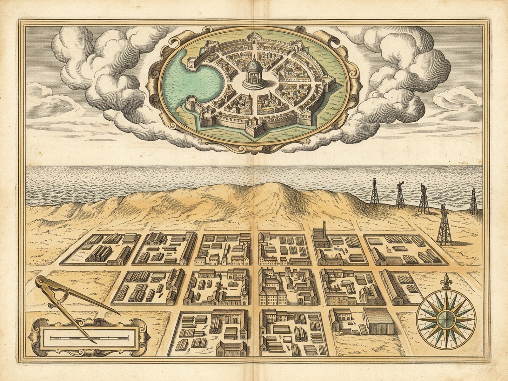
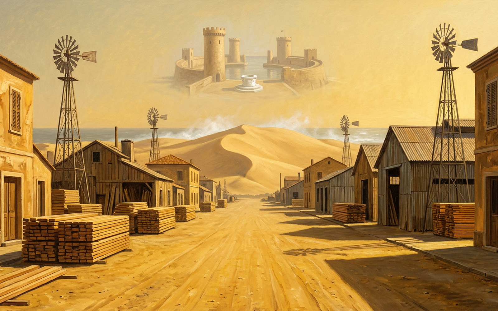

PYRRHA
VI · III
PRE-ARRIVAL IMAGINATION
[N] Utter "PYRRHA"
[A] Cross Threshold
[Q] Quarantine
[P] Royal Plates
[M] Sound: On
[R] Reset
[6]
Central Carved Marble Well
In the middle of the deep square, subterranean water rings beneath carved white marble.
[1]Enclosed Rampart
[2]Goblet Towers
[3]High Windows
[4]Sloped Bay
[5]Deep Square
[6]Marble Well
Arrival Threshold & Coastal Grid
UNSEEN · REVERSIBLE APPROACH
FOOTSTEP APPROACH: 0% · BEFORE SEEING PYRRHA
[A] Set Foot in Pyrrha
[W] Coastal Wind Gust
[S] Feed Sawmill Log
Sea Horizon
OPEN ULTRAMARINE BAY
Street Plan
ENCLOSED AMPHITHEATER
Acoustic Field
MARBLE WELL CHIME
Nominal Referent Ledger
Utterances: 0
Linguistic Sign "PYRRHA"
FORTIFIED GOBLET BAY CITY
Fortified Gulf City Name
"PYRRHA"
[N] Pronounce "PYRRHA"
[Q] Pre-Arrival Quarantine (Wordless Ocular)
Before ever seeing it, from the syllables of its name alone I know an enclosed city on the slopes of a bay, with high windows and towers flaring like a goblet, a deep square in the center, and a well in the middle.
ROYAL ARCHIVAL PLATES · PYRRHA (VI · III)
Diptych
Cartographic Survey
Illuminated Vista
[Z] 1.75x Loupe: Off
[Esc] Close

Plate I · Cartographic Survey — Sea-Blocking Dune, Lumber Grid & Spectral Gulf

Plate II · Illuminated Vista — Dusty Sawmill Town & Nameless Goblet Bay